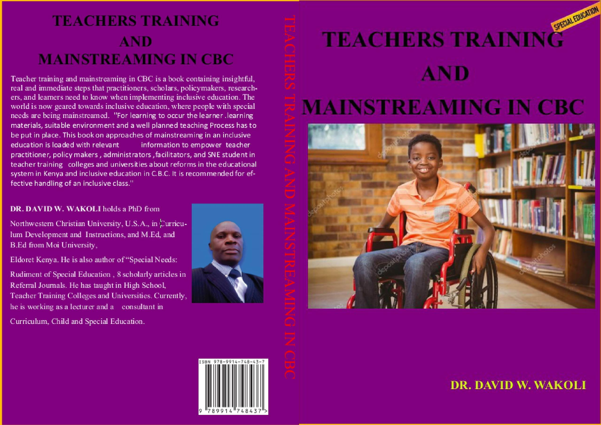

Authors can possess a wide range of skills that contribute to their
effectiveness in writing, communicating, and navigating the world of
literature and publishing. Here are some key skills that I do have.
Writing Proficiency:
Research Skills:
Editing & Revision:
Networking:
Time Management:
BOOK 1
Special Needs Education
BOOK 2
Rudiments Of Inclusive Education
BOOK 3
Teacher Training & Mainstreaming
BOOK 4
Inclusivity Competences in ECDE

BOOK 5
Introduction to Basic Competencies for Braille & Computer Applications

BOOK 6
Teaching Language Activities

BOOK 7
Teaching Mathematics Activities